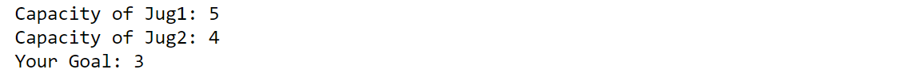
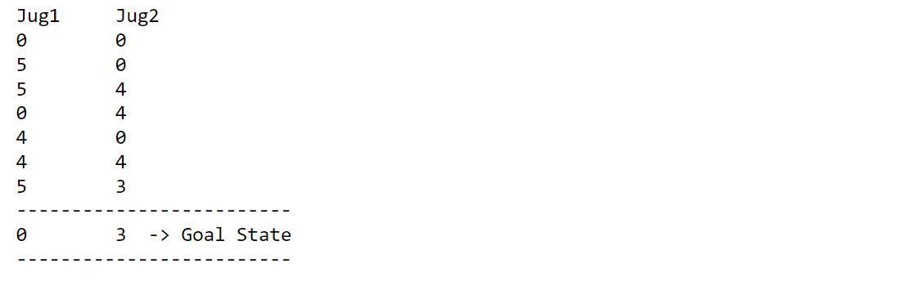

Let’s start learning about the water jug problem with a practical implementation!

About Water Jug problem
The water jug problem, also known as the “measure problem” or “die hard problem”, is a classic mathematical puzzle that involves two or more water jugs of different sizes and the task of measuring a specific amount of water using only these jugs and a limited number of pouring actions.
Here’s an example:
Suppose you have a 5-liter jug and a 3-liter jug, and you need to measure exactly 4 liters of water.
How can you do it using only these two jugs and a limited number of pouring actions? Let’s figure out!
Whether the goal is reachable or not
From the above example, how one conclude whether 4 liters or 2 liters is measured using 5-liters jug and a 3-liters jug.
Possible conditions for reaching the required aim:
- checks whether the desired amount of liquid is zero or less than the combined capacity of
Jug1andJug2 - checks whether the desired amount of liquid is a multiple of the greatest common divisor (GCD) of Jug1 and Jug2
For e.g. Greatest common divisor of 5 and 3 is 1 and 1 is divisible by 3 hence we can measured 3 liter water using 5 and 3 liter jugs.
Keep calm coding begins….
Water Jug and Python
Problem defination
This code prompts the user to input three values
- the capacity of the first jug (
jug1), - the capacity of the second jug (
jug2), - and a desired goal amount (
aim).
The input values are converted to integers using the int() function and stored in their respective variables.
jug1 = int(input("Capacity of Jug1: "))
jug2 = int(input("Capacity of Jug2: "))
aim = int(input("Your Goal: "))
Required libraries
from math import gcd
from collections import defaultdict
-
defaultdictis a subclass of the built-indictclass, which provides a default value for a nonexistent key when accessed. -
gcdis a function in themathmodule that calculates the greatest common divisor (GCD) of two or more integers.
Possibility check
Checking whether the goal is reachable or not.
if (aim == 0 or jug1 + jug2 > aim) and aim % gcd(jug1, jug2) == 0:
waterJugSolver(0, 0) #defined in the next module
else:
print("Not possible!")
If both conditions are true, then the waterJugSolver() function is called with initial values of 0 for both jugs.
If either of the conditions is false, then the code prints Not possible!, indicating that it is not possible to measure the desired amount of liquid with the given capacities of Jug1 and Jug2.
Water Jug Solver - Driver Code
This code defines the function waterJugSolver() which takes two parameters, amt1 and amt2, representing the current amount of liquid in Jug1 and Jug2 respectively.
visited = defaultdict(lambda: False)
print("Jug1 \t Jug2")
def waterJugSolver(amt1, amt2):
if (amt1 == aim and amt2 == 0) or (amt2 == aim and amt1 == 0): #No. 1.
print("-"*25)
print(amt1,'\t',amt2,' -> Goal State')
print("-"*25)
return True
if visited[(amt1,amt2)] == False: # No. 2.
print(amt1,'\t',amt2)
visited[(amt1, amt2)] = True
return (waterJugSolver(0, amt2) or # No. 3
waterJugSolver(amt1, 0) or
waterJugSolver(jug1, amt2) or
waterJugSolver(amt1, jug2) or
waterJugSolver(amt1 + min(amt2, (jug1-amt1)),
amt2 - min(amt2, (jug1-amt1))) or
waterJugSolver(amt1 - min(amt1, (jug2-amt2)),
amt2 + min(amt1, (jug2-amt2))))
else:
return False
-
visitedis adefaultdictobject that is initialized with a default value ofFalse. This means that when a key that does not exist invisitedis accessed, instead of throwing aKeyError, it will returnFalse. -
The lambda function passed as an argument to
defaultdictis used to specify the default value. In this case, thelambdafunction returnsFalsefor any non-existing key.
No. 1, 2, 3 explanation…
-
The function checks if the current amounts of liquid in the two jugs are equal to the desired amount of liquid, which is represented by the variable
aim. If they are equal, the function prints the current amounts of liquid and the message “Goal State” and returnsTrue. -
If the current amounts of liquid have not reached the desired amount, the function checks if the current state of the two jugs has already been visited before. If the state has not been visited before, it prints the current amounts of liquid and marks the state as visited using a dictionary called
visited. -
The function then recursively calls itself with different combinations of pouring, filling, and emptying the two jugs.
- If a solution is found, the function returns
True. - If no solution is found, it returns
False.
- If a solution is found, the function returns
The function uses a dictionary called visited to keep track of visited states, so that it does not revisit the same state again.
Example testing
Suppose you have a 5-liter jug and a 4-liter jug, and you need to measure exactly 3 liters of water.
prompt inputs….

prompt output….
